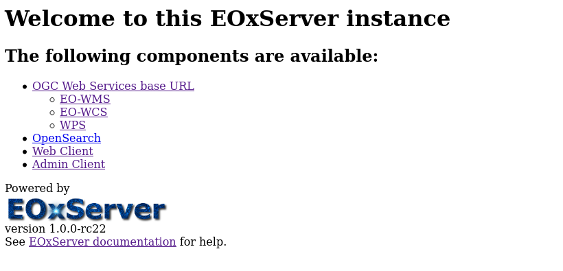
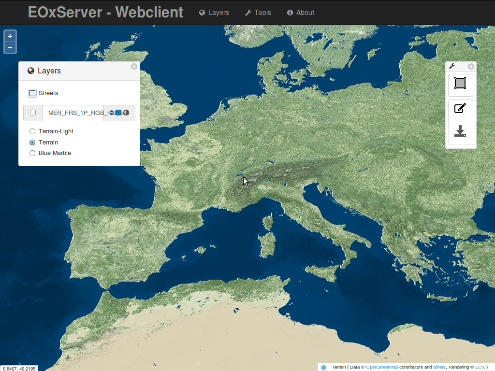
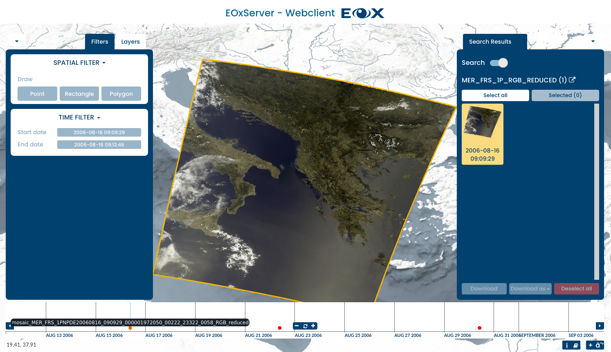
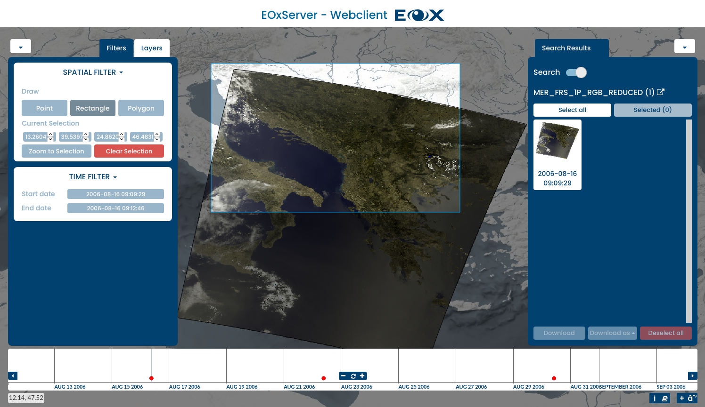
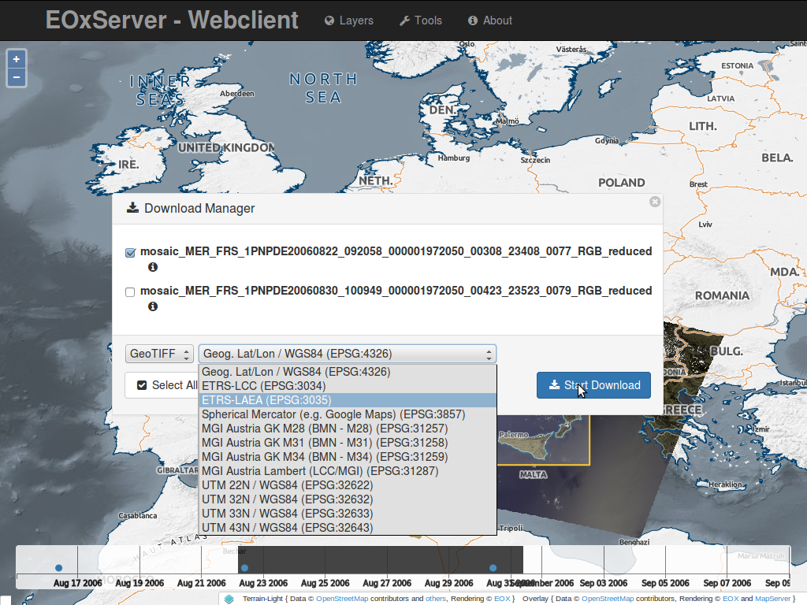
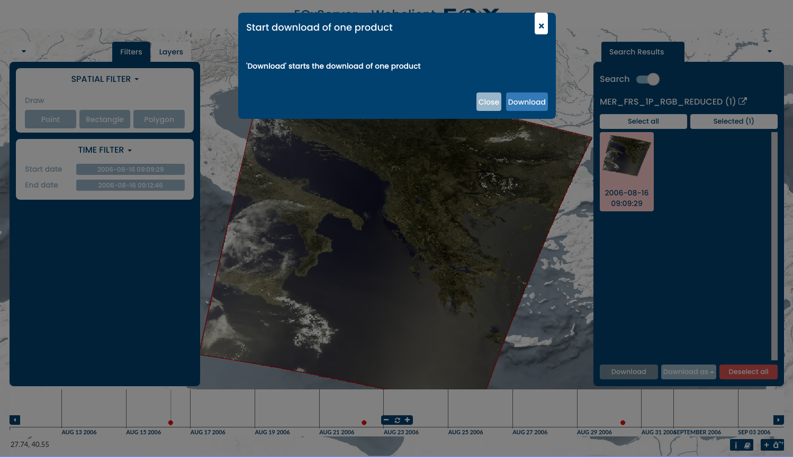
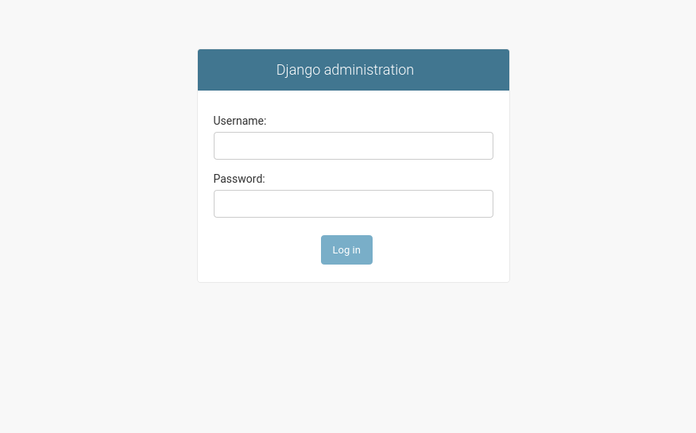
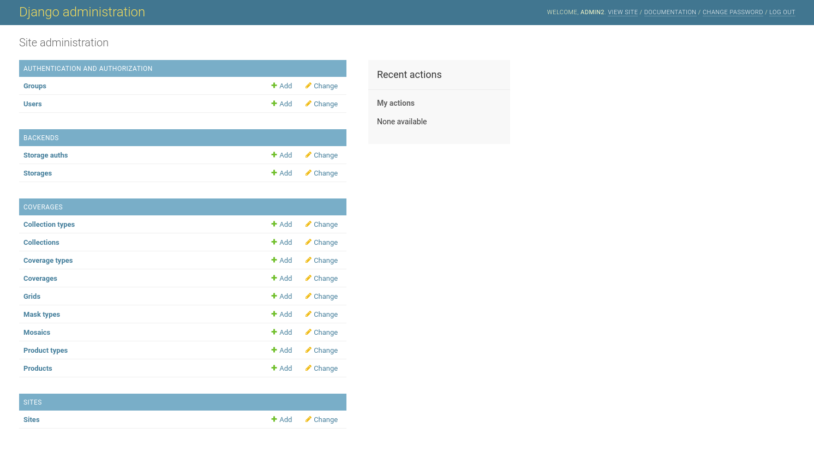
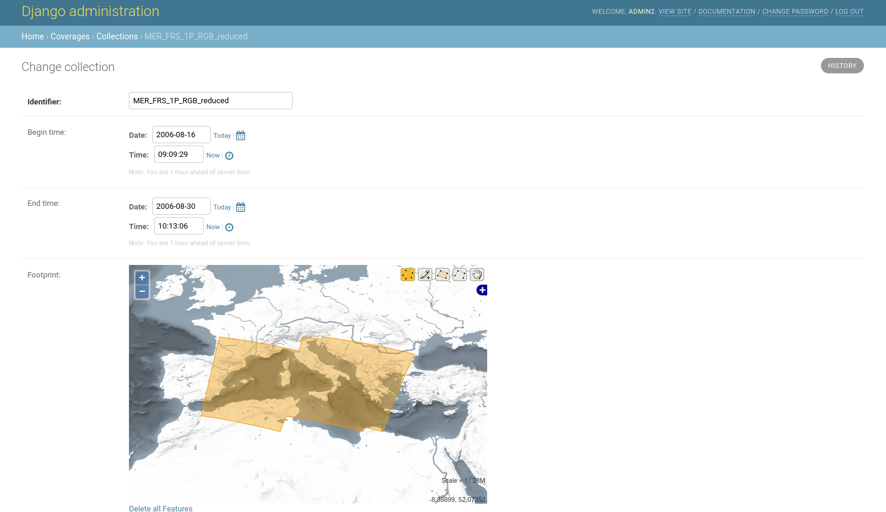
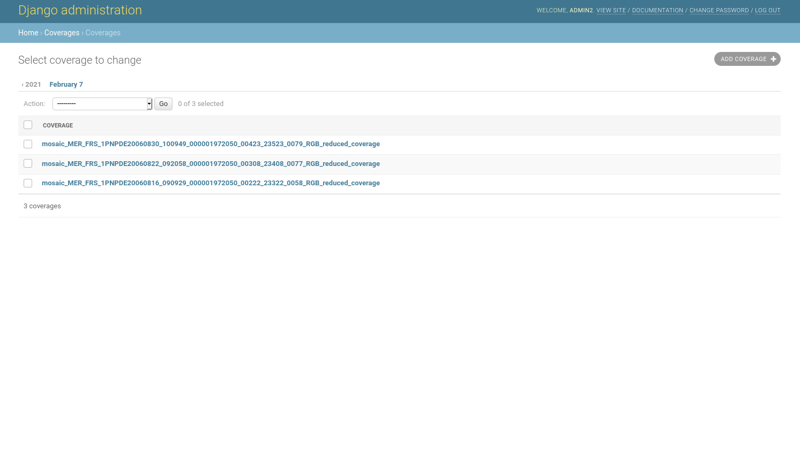

EOxServer クイックスタート¶
EOxServerは、大規模な地球観測(EO)データアーカイブとメタデータをオープン標準で提供するサーバです。これは、Python、MapServer、 Django/GeoDjango、GDAL、PROJ と SpatiaLite または PostGIS データベースを含むソフトウェアのオープンソーススタック上に構築されています。
このクイックスタートでは、次の方法について説明します:
Web Clientを使用して、EOデータをビュー、フィルタリング、サブセット、ダウンロード
管理クライアントを使用してEOデータアーカイブを検査
EoxServerを起動¶
メニューから を選択します。これによりブラウザが起動し、 http://localhost/eoxserver/ で利用可能なデモインスタンスが表示されます
{kind=link}
Web Clientの操作¶
Web Client リンクをクリックして、統合されたEOxServerクライアントを開きます。
このクライアントでは、EOxServerインスタンスの内容を表示できます。デモインスタンスはENVISAT MERISのシーンで構成されています。

クライアントは、マップ・ビューと、主要な相互作用を含むウィジェットで構成されています。主な領域は、クライアントのマップウィジェットで、一連のデータセットがすでに表示されています。下部にはタイムスライダウィジェットが表示され、時間次元のコンテンツを表示できます。
{kind=link}
[レイヤ選択]ウィジェットを展開するには、左上の歯車をクリックします。このウィジェットでは、レイヤの表示/非表示を切り替えたり、レイヤのレンダリングを設定したりできます。また、通りのオーバーレイを表示または非表示にしたり、背景のレイヤを選択したりすることもできます。このウィジェットの[フィルタ]タブでは、さまざまな空間値と時間値を照会できます。
{kind=link}
マップと同様に、現在表示されている注視点をズームおよびパンしたり、赤い点を含む領域を描画して注視点を選択したりできます。点の上にカーソルを置くと、データセットIDを表示することもできます。点をクリックすると、マップは自動的にデータセットの範囲にズームします。
{kind=link}
空間フィルタを有効にすると、マップ上に境界ボックス、ポリゴン、または点を直接描画できます。描画された地物は、ダウンロードツール内のクエリーに使用されます。
{kind=link}
検索結果ウィジェットの結果上にマウスポインタを置き、右上のアイコンをクリックすると、選択した結果で利用可能なサービスとメタデータの詳細情報を取得できます。
{kind=link}
ダウンロードツールが有効になると、サーバーへのクエリーが送信されます。このクエリには、選択された対象の時刻と境界ボックスが含まれています。結果はダウンロードウィジェットに表示され、ダウンロードするフォーマット、投影、データセットを選択できます。
This was a quick introduction to the EOxServer Web Client. Please refer to the online documentation for more information on this topic.
管理クライアントとの連携¶
EOxServerのメインページで Admin Client リンクをクリックし、ユーザ admin とパスワード admin でログインします。
{kind=link}
The Admin Client is Djangos standard admin and allows you to configure the available data. Please feel free to explore the client. More information can be found in the operations' guide.
{kind=link}
たとえば、デフォルトでロードされているコレクションを検査するには、 "コレクション" リンクをクリックし、 "MER_FRS_1P_RGB_reduced" リンクをクリックします。
{kind=link}
"Coverages" リンクをクリックすると、カバレッジをプレビューできます。
{kind=link}
次のステップ¶
これは簡単なデモですが、EOxServerでできることはたくさんあります。プロジェクトのWebサイトには、はじめての人に役立つ資材がたくさん用意されています。次にチェックすべきリソースはこちらです:
詳細については、EOxServer Overview を参照してください。
Read the EOxServer Operations' Guide.
Read the EOxServer Basics.
Ready to use EOxServer? Then join the community on the mailing lists to exchange ideas, discuss potential software improvements, and ask questions.